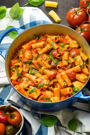

Chicken Riggies

Chicken riggies is a specialty dish from Utica, New York. Rigatoni (riggies) pasta is paired with chicken and spicy peppers in a creamy red and white sauce. Some other popular additions are mushrooms and black olives!
Ingredients
1 (16 ounce) package rigatoni pasta
3 tablespoons extra-virgin olive oil
1½ pounds skinless, boneless chicken breast, cut in bite-sized pieces
salt and ground black pepper to taste
2 Cubanelle peppers, seeded and thinly sliced
1 (28 ounce) can crushed tomatoes
3 roasted red peppers, drained and chopped
2 hot cherry peppers, seeded and minced
½ cup grated Parmesan cheese
Steps
Bring a large pot of slightly salted water to a boil over high heat. Add rigatoni pasta and cook until tender yet firm to the bite, 8 to 10 minutes. Drain and keep warm.
Heat olive oil in a large skillet over medium-high heat. Season chicken with salt and pepper; cook in hot oil until lightly browned on all sides and no longer pink in the center, about 7 minutes. Remove chicken from the skillet and keep warm.
Stir onion, Cubanelle peppers, and garlic into the skillet. Cook and stir until onion softens, about 4 minutes. Add crushed tomatoes, roasted red peppers, and hot cherry peppers; bring to a simmer. Stire in cooked chicken and heavy cream; simmer for 2 to 3 minutes.
Stir in pasta, then garnish with Parmesan cheese.